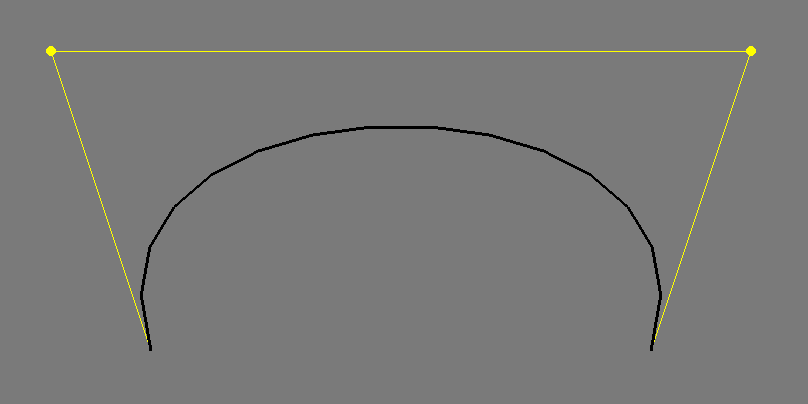
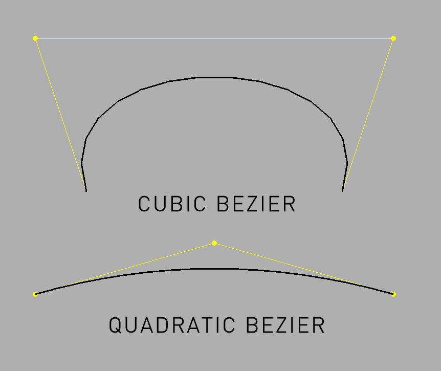
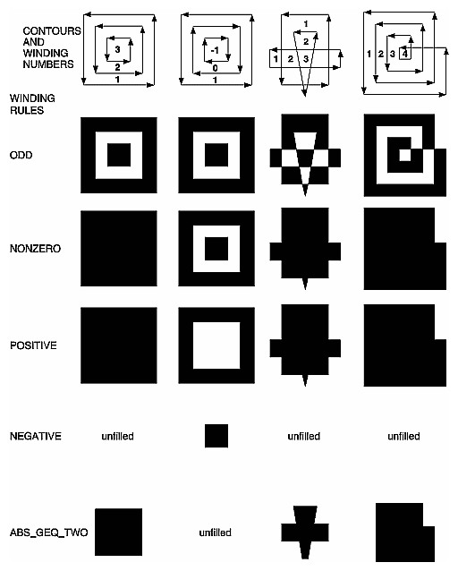
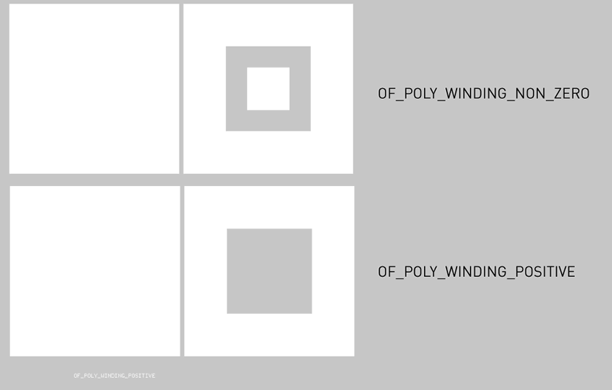

ofPath

ofPath is a way to create a path or multiple paths consisting of points. It allows you to combine multiple paths consisting of points into a single vector data object that can be drawn to the screen, manipulated point by point, or manipulated with it's child subpaths. It is better at representing and manipulating complex shapes than the ofPolyline and more easily represents multiple child lines or shapes as either ofSubPath or ofPolyline instances. By default ofPath uses ofSubPath instances. Closing the path automatically creates a new path:
for( int i = 0; i < 5; i++) {
path.arc( i * 50 + 20, i * 50 + 20, i * 40 + 10, i * 40 + 10, 0, 360); // creates a new ofSubPath
path.close();
}
To use ofPolyline instances, simply set the mode to POLYLINES
path.setMode(POLYLINES);
arc(...)
void ofPath::arc(const ofPoint ¢re, float radiusX, float radiusY, float angleBegin, float angleEnd)
Creates an arc at centre, which has the radiusX, radiusY, and begins at angleBegin and ends at angleEnd. To draw a circle with a radius of 50 pixels at 100, 100:
path.arc( 100, 100, 50, 50, 0, 360);
Note that angleBegin needs to be larger than angleEnd, i.e. 0, 180 is ok, while 180,0 is not.
arc(...)
void ofPath::arc(const ofPoint ¢re, float radiusX, float radiusY, float angleBegin, float angleEnd, bool clockwise)
arc(...)
void ofPath::arc(float x, float y, float radiusX, float radiusY, float angleBegin, float angleEnd)
Creates an arc at x,y, which has the radiusX, radiusY, and begins at angleBegin and ends at angleEnd. To draws a shape with a radius of 200 pixels at 300, 300:
path.moveTo(300, 300);
path.arc( 300, 300, 200, 200, 0, 271); // note 271, not 270 for precision

Note that angleBegin needs to be larger than angleEnd, i.e. 0, 180 is ok, while 180,0 is not.
arc(...)
void ofPath::arc(float x, float y, float z, float radiusX, float radiusY, float angleBegin, float angleEnd)
Creates an arc at x,y,z, which has the radiusX, radiusY, and begins at angleBegin and ends at angleEnd.
arcNegative(...)
void ofPath::arcNegative(const ofPoint ¢re, float radiusX, float radiusY, float angleBegin, float angleEnd)
arcNegative(...)
void ofPath::arcNegative(float x, float y, float radiusX, float radiusY, float angleBegin, float angleEnd)
arcNegative(...)
void ofPath::arcNegative(float x, float y, float z, float radiusX, float radiusY, float angleBegin, float angleEnd)
bezierTo(...)
void ofPath::bezierTo(const ofPoint &cp1, const ofPoint &cp2, const ofPoint &p)
Creates a cubic bezier line from the current drawing point with the 2 control points indicated by ofPoint cp1 and cp2, that ends at ofPoint to. For instance, the following:
line.addVertex(ofPoint(200, 400));
line.bezierTo(100, 100, 800, 100, 700, 400);
Creates this:  The control points are shown in yellow.
bezierTo(...)
void ofPath::bezierTo(float cx1, float cy1, float cx2, float cy2, float x, float y)
Creates a cubic bezier line from the current drawing point with the 2 control points indicated by the coordinates cx1, cy1 and cx2, cy2, that ends at the coordinates x, y.
bezierTo(...)
void ofPath::bezierTo(float cx1, float cy1, float cz1, float cx2, float cy2, float cz2, float x, float y, float z)
Creates a cubic bezier line in 3D space from the current drawing point with the 2 control points indicated by the coordinates cx1, cy1, cz1 and cx2, cy2, cz2, that ends at the coordinates x, y, z.
float cx = ofGetWidth()/2;
float cy = 200;
float step = TWO_PI / 60;
for (float i = 0.0; i < TWO_PI; i+=step) {
if(i == 0.0) {
line.addVertex(cx + (400*cos(i)), cy+400, 400 * sin(i));
} else {
line.bezierTo( cx - (200*cos(i)), cy-100, 400 * sin(i),
cx + (200*cos(i)), cy+600, 400 * sin(i),
cx + (400*cos(i)), cy+400, 400 * sin(i));
}
}
Documentation from code comments
Create a cubic bezier line in 3D space from the current drawing point with the 2 control points indicated by the coordinates cx1, cy1, cz1 and cx2, cy2, cz2, that ends at the coordinates x, y, z.
close()
void ofPath::close()
Closes the current subpath and creates a new subpath, either an ofPolyline or ofSubPath by calling newSubPath(), ensuring that the closed path doesn't have new points added to it.
curveTo(...)
void ofPath::curveTo(const ofPoint &p)
Draws a curve to p from the current drawing position.
curveTo(...)
void ofPath::curveTo(float x, float y)
Draws a curve to x,y from the current drawing position. To draw a small rose curves at the mouse position:
float scale = ofDist(mouseX, mouseY, px, py);
for( float theta = 0; theta < TWO_PI; theta += 0.1)
{
float r = cos(theta * (scale/6)) * scale;
path.curveTo(mouseX + r * cos(theta), mouseY + r * sin(theta));
}
px = mouseX;
py = mouseY;
Documentation from code comments
Draws a curve to x,y from the current drawing position
curveTo(...)
void ofPath::curveTo(float x, float y, float z)
Draws a curve to x,y,z from the current drawing position.
draw(...)
void ofPath::draw(float x, float y)
Draws the path at x,y. Calling draw() also calls tessllate().
getFillColor()
ofColor ofPath::getFillColor()
Returns the ofColor that the ofPath is using.
Documentation from code comments
Get the ofColor fill of the ofPath
getOutline()
const vector< ofPolyline > & ofPath::getOutline()
This returns an ofPolyline representing the outline of an ofPath.
getStrokeColor()
ofColor ofPath::getStrokeColor()
Returns the stroke color that the ofPath is using.
Documentation from code comments
Get the stroke color of the ofPath
getStrokeWidth()
float ofPath::getStrokeWidth()
Returns the stroke width.
Documentation from code comments
Get the stroke width of the ofPath
The default value is `0
getWindingMode()
ofPolyWindingMode ofPath::getWindingMode()
Returns the poly winding mode currently in use.
isFilled()
bool ofPath::isFilled()
Whether the path is using a fill or not.
Documentation from code comments
Get whether the path is using a fill or not.
The default value is true
lineTo(...)
void ofPath::lineTo(const ofPoint &p)
Draws a straight line from the current drawing position to the location indicated by p.
lineTo(...)
void ofPath::lineTo(float x, float y)
Draws a straight line from the current drawing position to the location indicated by x,y.
lineTo(...)
void ofPath::lineTo(float x, float y, float z)
Draws a straight line from the current drawing position to the location indicated by x,y,z.
moveTo(...)
void ofPath::moveTo(const ofPoint &p)
Moves the drawing position to p. This means that a subsequent calls to, for instance, lineTo() or curveTo() will connect the location p to the new location.
moveTo(...)
void ofPath::moveTo(float x, float y, float z)
Moves the drawing position to x,y.z. This means that a subsequent calls to, for instance, lineTo() or curveTo() will connect the location x,y,z to the new location.
newSubPath()
void ofPath::newSubPath()
Creates a new subpath, either an ofPolyline instance or an ofSubPath instance. All points added after a call to ofSubPath will be done in the newly created subpath. Calling close() automatically calls create newSubPath(), ensuring that the closed path doesn't have new points added to it.
quadBezierTo(...)
void ofPath::quadBezierTo(const ofPoint &cp1, const ofPoint &cp2, const ofPoint &p)
Creates a quadratic bezier line in 3D space from the current drawing point with the beginning indicated by the coordinates cx1, cy1, cz1, the control point at cx2, cy2, cz2, and that ends at the coordinates x, y, z. 
quadBezierTo(...)
void ofPath::quadBezierTo(float cx1, float cy1, float cx2, float cy2, float x, float y)
Creates a quadratic bezier line in 2D space from the current drawing point with the beginning indicated by the point p1, the control point at p2, and that ends at the point p3.
quadBezierTo(...)
void ofPath::quadBezierTo(float cx1, float cy1, float cz1, float cx2, float cy2, float cz2, float x, float y, float z)
Creates a quadratic bezier line in 3D space from the current drawing point with the beginning indicated by the coordinates cx1, cy1, the control point at cx2, cy2, and that ends at the coordinates x, y.
rectRounded(...)
void ofPath::rectRounded(const ofPoint &p, float w, float h, float topLeftRadius, float topRightRadius, float bottomRightRadius, float bottomLeftRadius)
rectRounded(...)
void ofPath::rectRounded(const ofRectangle &b, float topLeftRadius, float topRightRadius, float bottomRightRadius, float bottomLeftRadius)
rectRounded(...)
void ofPath::rectRounded(float x, float y, float z, float w, float h, float topLeftRadius, float topRightRadius, float bottomRightRadius, float bottomLeftRadius)
scale(...)
void ofPath::scale(float x, float y)
Changes the size of either the ofPolyline or ofSubPath instances that the ofPath contains. These changes are non-reversible, so for instance scaling by 0,0 zeroes out all data.
setColor(...)
void ofPath::setColor(const ofColor &color)
This sets the color of the path. This affects both the line if the path is drawn as wireframe and the fill if the path is drawn with fill. All subpaths are affected.
setFillColor(...)
void ofPath::setFillColor(const ofColor &color)
This sets the fill color of the path. This has no affect if the path is drawn as wireframe.
setFillHexColor(...)
void ofPath::setFillHexColor(int hex)
This sets the fill color of the path. This has no affect if the path is drawn as wireframe.
setFilled(...)
void ofPath::setFilled(bool hasFill)
Sets whether the path should be drawn as wireframes or filled.
setHexColor(...)
void ofPath::setHexColor(int hex)
This sets the color of the path. This affects both the line if the path is drawn as wireframe and the fill if the path is drawn with fill. All subpaths are affected.
setPolyWindingMode(...)
void ofPath::setPolyWindingMode(ofPolyWindingMode mode)
This sets the way that the points in the sub paths are connected. OpenGL can only render convex polygons which means that any shape that isn't convex, i.e. that has points which are concave, going inwards, need to be tessellated into triangles so that OpenGL can render them. If you're using filled shapes with your ofPath this is done automatically for you. The possible options you can pass in are:
OF_POLY_WINDING_ODD OF_POLY_WINDING_NONZERO OF_POLY_WINDING_POSITIVE OF_POLY_WINDING_NEGATIVE OF_POLY_WINDING_ABS_GEQ_TWO

So adding the following points:
void ofApp::setup(){
path.lineTo(0, 400);
path.lineTo(400, 400);
path.lineTo(400, 0);
path.lineTo(0, 0); // outer
path.close();
path.moveTo(100, 100);
path.lineTo(100, 300);
path.lineTo(300, 300);
path.lineTo(300, 100);
path.lineTo(100, 100); // inner 1
path.close();
path.moveTo(250, 150);
path.lineTo(150, 150);
path.lineTo(150, 250);
path.lineTo(250, 250);
path.lineTo(250, 150); // inner 2 (backwards)
path2.lineTo(0, 400);
path2.lineTo(400, 400);
path2.lineTo(400, 0);
path2.lineTo(0, 0); // outer
path2.close();
path2.moveTo(100, 100);
path2.lineTo(300, 100);
path2.lineTo(300, 300);
path2.lineTo(100, 300);
path2.lineTo(100, 100); // inner 1
path2.close();
path2.moveTo(150, 150);
path2.lineTo(250, 150);
path2.lineTo(250, 250);
path2.lineTo(150, 250);
path2.lineTo(150, 150); // inner 2 (fwds)
}
void ofApp::draw(){
ofTranslate(40,40);
path.draw();
ofTranslate(410, 0);
path2.draw();
}
void ofApp::keyPressed(int key){
mode++;
if( mode > 4 ) mode = 0;
path.setPolyWindingMode((ofPolyWindingMode) mode);
path2.setPolyWindingMode((ofPolyWindingMode) mode);
}
we can see non zero and positive handle the winding differently:

Documentation from code comments
Set the way that the points in the sub paths are connected.
OpenGL can only render convex polygons which means that any shape that isn't convex, i.e. that has points which are concave, going inwards, need to be tessellated into triangles so that OpenGL can render them. If you're using filled shapes with your ofPath this is done automatically for you.
The possible options you can pass in are:
OF_POLY_WINDING_ODD
OF_POLY_WINDING_NONZERO
OF_POLY_WINDING_POSITIVE
OF_POLY_WINDING_NEGATIVE
OF_POLY_WINDING_ABS_GEQ_TWO
setStrokeColor(...)
void ofPath::setStrokeColor(const ofColor &color)
This sets the stroke color of the path. This has no affect if the path is drawn filled.
setStrokeHexColor(...)
void ofPath::setStrokeHexColor(int hex)
This sets the stroke color of the path. This has no affect if the path is drawn filled.
setStrokeWidth(...)
void ofPath::setStrokeWidth(float width)
Sets the stroke width of the line if the ofPath is to be drawn not in wireframe.
triangle(...)
void ofPath::triangle(float x1, float y1, float z1, float x2, float y2, float z2, float x3, float y3, float z3)
comments powered by Disqus
comments
You can add comments with usage examples or other information for each class, method or variable, for adding documentation to an empty section or reporting errors is better to send a fix or open an issue through github.
When posting code enclose it in: